Kapitel 01
Grundprinzip
Die Stundenplanung erzeugt aus den gepflegten Semesterplaenen einen wiederkehrenden Plan fuer ein ausgewaehltes Semester. CoursePilot plant dabei nur Module, die in den Gruppenplaenen fuer dieses Semester vorgesehen sind.
Der Planungsalgorithmus beruecksichtigt:
- Studiengruppen und deren Modulbelegung je Fachsemester.
- Module mit SWS, Teilnehmenden, Raumanforderungen und Modulverantwortlichen.
- Dozenten mit woechentlicher Verfuegbarkeit, Sperrzeiten und maximalen SWS pro Tag.
- Raeume mit Kapazitaet, Ausstattung und blockierten Zeiten.
- Semesterzeitraum, Vorlesungswochen und Vorlesungspausen.
- Systemregeln wie Tagesstart, Tagesende, Pausen zwischen Terminen, Mittagspause und geplante Wochentage.
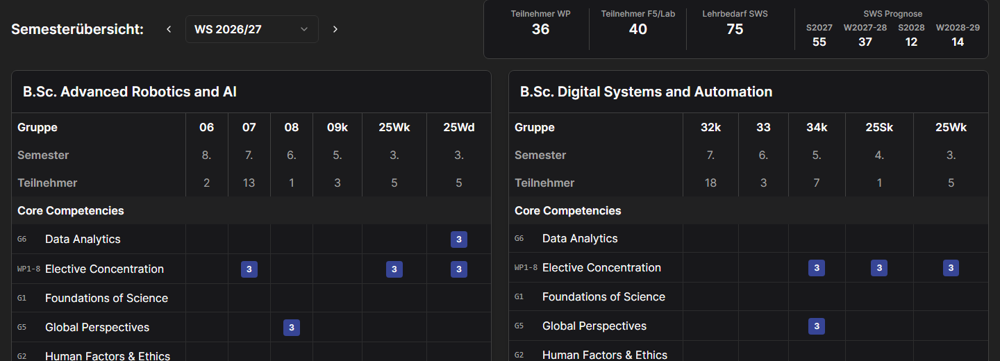
Kapitel 02
Datenpflege vorbereiten
Vor der Stundenplanung sollten die Daten in dieser Reihenfolge gepflegt werden:
- Akademischer Kalender
- Kataloge und Kategorien
- Nutzer und Dozenten
- Raeume
- Module
- Studiengaenge
- Gruppen und Semesterplaene
- Dozenten-Verfuegbarkeiten
- Optionale Raumbelegungen oder Sperrzeiten
Diese Reihenfolge ist wichtig, weil spaetere Daten auf fruehere Daten verweisen. Ein Modul verweist zum Beispiel auf Kategorien, Studiengaenge und einen Modulverantwortlichen. Ein Gruppenplan verweist auf Module und Studiengaenge.
Kapitel 03
Daten manuell einpflegen
3.1 Akademischen Kalender anlegen
Oeffnen: Einstellungen -> Kalender
Pflegen Sie dort:
- Beginn des akademischen Jahres.
- Semester-ID, z. B.
ws2026oderss2027. - Semestername, z. B.
WS 2026/27. - Typ:
WSoderSS. - Jahr.
- Vorlesungsbeginn und Vorlesungsende.
- Pruefungsbeginn und Pruefungsende.
- Optional: Vorlesungspause mit Start- und Enddatum.
Die Stundenplanung verwendet den Vorlesungsbeginn, das Vorlesungsende und die Vorlesungspause, um die tatsaechlichen Einzeltermine zu erzeugen.
3.2 Kategorien und Dropdown-Werte pflegen
Oeffnen: Einstellungen -> Variablen
Pflegen Sie hier:
- Modulkategorien, z. B.
Core CompetenciesoderElectives. - Pruefungsformen.
- Lehrformen.
- Sprachen.
Diese Werte helfen bei der einheitlichen Modulpflege und verhindern unterschiedliche Schreibweisen.
3.3 Nutzer und Dozenten anlegen
Oeffnen: Nutzerverwaltung oder Dozenten -> Dozentenuebersicht
Pflegen Sie fuer Dozenten mindestens:
- ID
- Name
- Rolle, z. B.
lecturer,professor,adminodercoordinator - Optional: Fachbereich
Nur Nutzer mit einer lehrenden Rolle koennen sinnvoll als Modulverantwortliche oder Dozenten in der Stundenplanung verwendet werden.
3.4 Raeume anlegen
Oeffnen: Raeume -> Raumuebersicht
Pflegen Sie fuer jeden Raum:
- Raum-ID
- Raumname
- Raumtyp:
building,onlineoderhybrid - Kapazitaet
- Ausstattung: Beamer, Dozenten-PC, Mac-Raum, PC-Labor usw.
- Optional: Etage, Gebaeude, Flaeche, Link, Notizen
- Optional: blockierte Zeitraeume
Die Raumkapazitaet und Ausstattung werden in der automatischen Planung beruecksichtigt. Ein Modul mit PC-Labor-Anforderung wird also nicht in einen Raum ohne PC-Labor geplant.
3.5 Module pflegen
Oeffnen: Module -> Modulsheet oder Module -> Moduluebersicht
Pflegen Sie fuer jedes Modul mindestens:
- Modul-ID
- Name
- SWS
- CP
- Typ:
Pflicht,WahlpflichtoderPool - Kategorie
- Zugeordnete Studiengaenge
- Modulverantwortliche(r)
- Optional: Voraussetzungen, verbotene Fachsemester, maximale Teilnehmerzahl
- Optional: Raumanforderungen
Wichtig fuer die Stundenplanung:
SWSbestimmt die geplante Unterrichtszeit.personInChargemuss exakt dem Namen eines vorhandenen Dozenten entsprechen.requirementsbestimmt, welche Raeume geeignet sind.maxParticipantsund die Gruppengroessen helfen bei der Raumwahl.
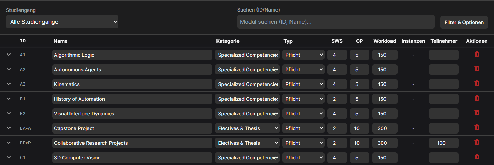
3.6 Studiengaenge pflegen
Oeffnen: Semesterplan -> Semesterplan oder die Studiengang-/Gruppenpflege
Ein Studiengang benoetigt:
- ID
- Name
- Anzahl Semester
- Standard-Teilnehmerzahl
- Liste der enthaltenen Module
- Optional: Reihenfolge der Kategorien
- Optional: Template-Plan
Der Template-Plan ist nuetzlich, um neue Gruppen schneller anzulegen.
3.7 Gruppen und Semesterplaene pflegen
Oeffnen: Semesterplan -> Semesterplan
Fuer jede Gruppe benoetigen Sie:
- Gruppen-ID
- Name
- Studiengang
- Startsemester
- Teilnehmendenzahl
- Kurzname
- Gruppentyp
- Modulbelegung pro Fachsemester
Die Stundenplanung rechnet aus dem Startsemester und dem ausgewaehlten Planungssemester aus, welches Fachsemester der Gruppe gerade aktiv ist. Nur die Module in diesem Fachsemester werden fuer das ausgewaehlte Semester geplant.
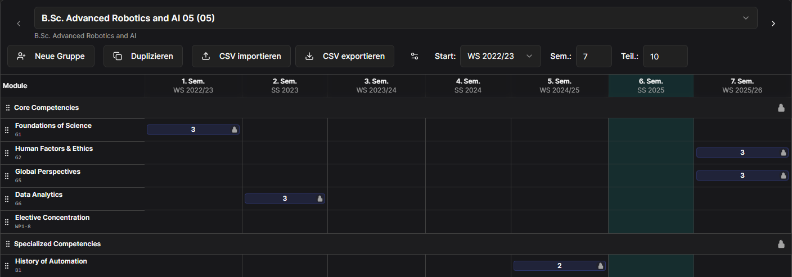
3.8 Dozenten-Verfuegbarkeit pflegen
Oeffnen: Dozenten -> Verfuegbarkeit
Pflegen Sie:
- Woechentliche Verfuegbarkeiten, z. B. Montag 08:00 bis 16:00.
- Woechentliche Sperrzeiten, z. B. Freitag 12:00 bis 18:00.
- Datumsbezogene negative Verfuegbarkeiten, z. B. 2026-10-05 08:00 bis 18:00.
- Maximale SWS pro Tag.
- Optional: Notizen.
Negative Verfuegbarkeiten sind besonders wichtig fuer Urlaub, Konferenzen, Blocktermine oder einzelne Tage, an denen ein Dozent nicht verfuegbar ist.
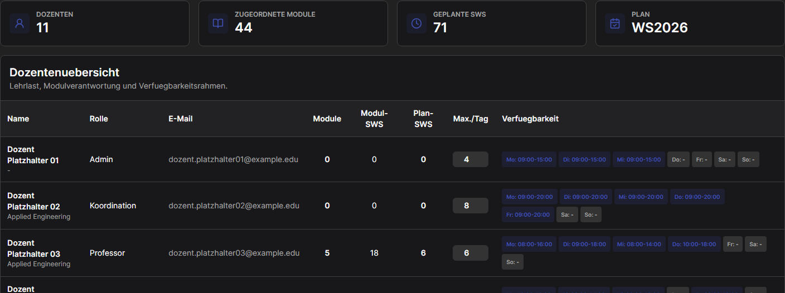
3.9 Planungsregeln einstellen
Oeffnen: Stundenplan
In der rechten Einstellungsseite der Stundenplanung koennen Sie pflegen:
- Geplante Wochentage.
- Tagesstart und Tagesende.
- Pause zwischen Terminen.
- Pause innerhalb laengerer Veranstaltungen.
- Intervall fuer interne Pausen.
- Mittagspause aktivieren/deaktivieren.
- Beginn und Ende der Mittagspause.
Diese Regeln beeinflussen direkt, welche Slots als planbar gelten.
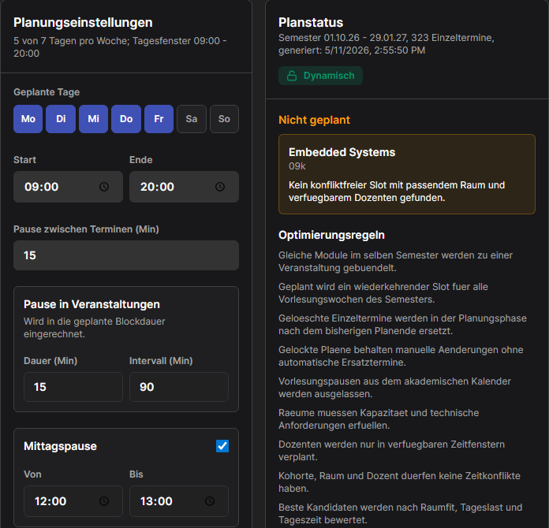
Kapitel 04
Daten per CSV importieren
Oeffnen: Einstellungen -> Import
Dort gibt es fuer jede JSON-Datei eine eigene Import-Karte. Jede Karte zeigt:
- den Namen der JSON-Datei,
- Pflichtspalten,
- optionale Spalten,
- das erwartete Werteformat,
- einen Button zum Herunterladen einer CSV-Vorlage,
- einen Button zum Importieren einer CSV-Datei.
Jeder Import ersetzt die passende Datenmenge im aktuellen
Datenbestand. Beispiel: Ein Import fuer modules.json
ersetzt die Modulliste. Andere Datenbereiche bleiben erhalten.
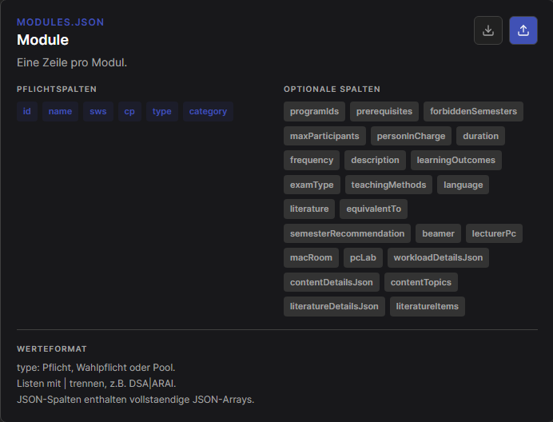
Kapitel 05
Daten aus Excel als CSV vorbereiten
5.1 Vorlage herunterladen
- Oeffnen Sie
Einstellungen -> Import. - Suchen Sie die passende Import-Karte, z. B.
modules.json. - Klicken Sie auf den Download-Button.
- Oeffnen Sie die heruntergeladene CSV-Vorlage in Excel.
- Tragen Sie Ihre Daten in die vorhandenen Spalten ein.
Die erste Zeile muss die Spaltennamen enthalten. Spaltennamen duerfen nicht umbenannt werden.
5.2 Excel-Tabelle richtig aufbauen
Beachten Sie beim Arbeiten in Excel:
- Keine verbundenen Zellen verwenden.
- Keine Summenzeilen oder Zwischenueberschriften in den Datenbereich schreiben.
- Eine Datenzeile entspricht immer genau einem Datensatz.
- Datumswerte im Format
YYYY-MM-DDspeichern, z. B.2026-10-05. - Zeiten im Format
HH:mmspeichern, z. B.09:00. - Wahr/Falsch-Werte als
trueoderfalseeintragen. - Listen mit dem Zeichen
|trennen, z. B.DSA|ARAI. - Mehrere Slot-Gruppen mit
;;trennen, z. B.monday|08:00|16:00;;tuesday|09:00|18:00. - JSON-Spalten nur verwenden, wenn wirklich strukturierte Detaildaten importiert werden sollen.
Falls Excel Datumswerte automatisch umformatiert, stellen Sie die betroffenen Spalten auf Text oder verwenden Sie eine Hilfsspalte:
=TEXT(A2;"yyyy-mm-dd")Fuer Uhrzeiten kann eine Hilfsspalte helfen:
=TEXT(A2;"hh:mm")5.3 CSV aus Excel exportieren
- Datei oeffnen.
Datei -> Speichern unterwaehlen.- Als Dateityp
CSV UTF-8 (durch Trennzeichen getrennt) (*.csv)auswaehlen. - Datei speichern.
- Falls Excel warnt, dass nur das aktive Tabellenblatt gespeichert wird, bestaetigen.
Hinweis: Je nach Windows-/Excel-Region verwendet Excel Komma oder
Semikolon als Trennzeichen. Der Import ist fuer normale
CSV-Dateien gedacht; am sichersten ist CSV UTF-8.
Kapitel 06
Benoetigte CSV-Spalten je Datenbereich
6.1 Module (modules.json)
Pflichtspalten: id, name, sws, cp, type, category
Optionale wichtige Spalten: programIds, prerequisites, forbiddenSemesters, maxParticipants, personInCharge, duration, frequency, description, learningOutcomes, examType, teachingMethods, language, literature, equivalentTo, semesterRecommendation, beamer, lecturerPc, macRoom, pcLab
type:Pflicht,WahlpflichtoderPoolprogramIds: Studiengang-IDs mit|trennenprerequisites: Modul-IDs mit|trennenforbiddenSemesters: Zahlen mit|trennen- Ausstattung:
trueoderfalse
6.2 Studiengaenge (programs.json)
Pflichtspalten: id, name, moduleIds, defaultStudents, semesters
Optionale Spalten: categoryOrder, department, sem1, sem2, sem3, sem4, sem5, sem6, sem7, sem8, sem9
moduleIds: alle Modul-IDs des Studiengangs mit|trennensem1bissem9: Module fuer den Template-Plan mit|trennen
6.3 Gruppen (cohorts.json)
Pflichtspalten: id, name, programId, startSemesterId, startSemesterName, startSemesterType, startSemesterYear, studentCount, semesters, shortName, type
Optionale Spalten: userLockedModules, sem1, sem2, sem3, sem4, sem5, sem6, sem7, sem8, sem9
startSemesterType:SSoderWStype: z. B.klassischoderdualsem1bissem9: Modul- oder Modulinstanz-IDs mit|trennen
6.4 Kategorien (categories.json)
Pflichtspalten: id, name
6.5 Kataloge (catalogs.json)
Pflichtspalten: key, value
Werte fuer key: examTypes, teachingMethods, languages, personInCharge
6.6 Nutzer und Dozenten (users.json)
Pflichtspalten: id, name, email, role
Optionale Spalten: department, cohortId, universityId
Werte fuer role: superuser, admin, coordinator, professor, lecturer, student, guest
6.7 Raeume (rooms.json)
Pflichtspalten: id, name, type, capacity
Optionale Spalten: beamer, lecturerPc, macRoom, pcLab, darkenable, barrierFree, airConditioned, workspacesMac, workspacesPc, area, floor, building, weblink, blockedPeriods, notes
type:building,onlineoderhybrid- Ausstattung:
trueoderfalse blockedPeriods:start|end|reason, mehrere Eintraege mit;;trennen
6.8 Raumbelegung (room-occupancy.json)
Pflichtspalten: id, roomId, date, startTime, endTime, title
Optionale Spalten: person, purpose, moduleId, cohortId, color, lockKind
date:YYYY-MM-DDstartTimeundendTime:HH:mmlockKind:softoderhard
6.9 Systemeinstellungen (system-settings.json)
Pflichtspalten: currentSemester, lecturesStart, lecturesEnd, defaultLocation, cpWorkloadFactor, swsDurationMinutes, defaultRoomBufferMinutes, startHour, endHour, standardPauseMinutes
Optionale Spalten: examsStart, examsEnd, campusLocations, eventBreakDurationMinutes, eventBreakIntervalMinutes, plannedWeekdays, useLunchBreak, lunchBreakStart, lunchBreakEnd
campusLocations: Standorte mit|trennenplannedWeekdays: Wochentage mit|trennen, z. B.monday|tuesday|wednesday|thursday|fridayuseLunchBreak:trueoderfalse
6.10 Akademischer Kalender (academic-calendar.json)
Pflichtspalten: academicYearStartMonth, id, name, type, year, lecturesStart, lecturesEnd, examsStart, examsEnd
Optionale Spalten: lectureBreakStart, lectureBreakEnd
type:SSoderWS- Datumswerte:
YYYY-MM-DD
6.11 Dozenten-Verfuegbarkeit (lecturer-availability.json)
Pflichtspalten: userId, availableSlots
Optionale Spalten: unavailableSlots, unavailableDateSlots, maxSwsPerDay, notes
availableSlots:day|start|end, mehrere mit;;trennenunavailableSlots:day|start|end, mehrere mit;;trennenunavailableDateSlots:id|date|start|end|reason, mehrere mit;;trennen- Wochentage:
monday,tuesday,wednesday,thursday,friday,saturday,sunday
6.12 Bestehenden Stundenplan importieren (schedule.json)
Pflichtspalten: semesterId, status, semesterStartDate, semesterEndDate, weekStartDate, weekEndDate, entryId, moduleId, moduleName, roomId, roomName, day, date, startTime, endTime, sws, participants
Optionale Spalten: generatedAt, moduleInstanceIds, cohortIds, cohortNames, lecturerUserId, lecturerName, occurrenceDates, score, warnings, totalOfferings, plannedRoomAssignments, teachingWeeks
Dieser Import ist fuer bereits geplante Termine gedacht. Fuer die normale Stundenplanung ist es besser, Module, Gruppen, Raeume und Verfuegbarkeiten zu importieren und den Plan danach neu erzeugen zu lassen.
Kapitel 07
Import in CoursePilot durchfuehren
Einstellungen -> Importoeffnen.- Passende Import-Karte suchen.
- CSV-Datei ueber den Upload-Button waehlen.
- Erfolgsmeldung oder Fehlermeldung direkt in der Karte pruefen.
- Bei Fehlern die CSV in Excel korrigieren und erneut als CSV UTF-8 speichern.
- Import wiederholen.
Typische Fehler:
- Pflichtspalte fehlt.
- Spaltenname ist falsch geschrieben.
- Ein Datum liegt nicht im Format
YYYY-MM-DDvor. - Listen verwenden Komma statt
|. - Ein Modulverantwortlicher ist nicht als Dozent/Nutzer vorhanden.
- Ein Gruppenplan enthaelt Modul-IDs, die in
modules.jsonfehlen.
Kapitel 08
Stundenplan erzeugen
- Oeffnen Sie
Stundenplan. - Waehlen Sie oben das gewuenschte Semester.
- Pruefen Sie die Planungsregeln in der rechten Einstellungsseite.
- Klicken Sie auf
Semester planen. - Falls Modulverantwortliche fehlen, erscheint eine Tabelle.
- Waehlen Sie in der Tabelle fuer jedes betroffene Modul einen Modulverantwortlichen.
- Klicken Sie erneut auf
Semester planen.
CoursePilot erzeugt danach:
- geplante Veranstaltungen,
- Einzeltermine ueber den Semesterzeitraum,
- Raumbelegungen,
- offene Probleme, falls kein konfliktfreier Termin gefunden wurde.
Kapitel 09
Ergebnis kontrollieren
Nach der Planung sollten Sie kontrollieren:
- Anzahl der Veranstaltungen.
- Anzahl offener Probleme.
- Anzahl der Einzeltermine.
- Vorlesungswochen.
- Filteransichten nach Gesamt, Dozent, Gruppe oder Raum.
- Stichproben in unterschiedlichen Wochen.
Nutzen Sie die Wochenpfeile oder das Datumsfeld, um durch das
Semester zu wechseln. Mit Erste Woche springen Sie
zur ersten Vorlesungswoche.
Kapitel 10
Konflikte und offene Probleme loesen
Wenn CoursePilot keinen Slot findet, erscheint ein offenes Problem. Typische Ursachen:
- Kein geeigneter Raum vorhanden.
- Raumkapazitaet reicht nicht aus.
- Raum hat die benoetigte Ausstattung nicht.
- Dozent ist nicht verfuegbar.
- Mittagspause oder Tageszeiten blockieren den Termin.
- Gruppe, Raum oder Dozent haette einen Konflikt.
Vorgehen:
- Problem oeffnen.
- Ursache lesen.
- Datum, Raum, Start, Ende oder Dozent anpassen.
- Verfuegbare Raeume im Dropdown pruefen.
- Aktuelle Pruefung beachten.
- Konfliktfrei planen oder bewusst manuell festlegen.
Wenn ein Termin gekuerzt wird, verschwindet die Unterrichtszeit nicht automatisch. Pruefen Sie deshalb die angezeigten Soll-/Ist-Werte fuer das ausgewaehlte Modul und passen Sie bei Bedarf Anzahl, erstes Datum oder letztes Datum der Termine an.
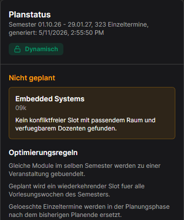
Kapitel 11
Termine manuell bearbeiten
Ein geplanter Termin kann geoeffnet und bearbeitet werden. Dabei sind u. a. relevant:
- Datum
- Raum
- Startzeit
- Endzeit
- Dozent
- manueller Lock
- Titel
- Notiz
- Anzahl geplanter Termine
- erster Termin
- letzter Termin
- Soll-/Ist-Unterrichtseinheiten fuer das ausgewaehlte Modul
Bei Serien sollten Sie besonders darauf achten, ob die Aenderung nur einen Einzeltermin oder die Terminserie betrifft.
Kapitel 12
Plan sperren oder entsperren
Wenn der Plan fertig kontrolliert ist:
- Klicken Sie auf
Plan sperren. - Der Plan wird gegen automatische Veraenderungen geschuetzt.
Wenn spaeter wieder automatisch angepasst werden soll:
- Klicken Sie auf
Entsperren. - Bestaetigen Sie die Rueckfrage.
Kapitel 13
Stundenplan exportieren
Im Bereich Stundenplan gibt es den Export:
CSVfuer Tabellenkalkulation oder Nachbearbeitung.iCal (.ics)fuer Kalenderprogramme.JSONfuer technische Weiterverarbeitung oder Sicherung.Drucken / PDFfuer Ausdruck oder PDF-Erzeugung.
Empfehlung:
- Fuer Abstimmungen mit Verwaltung oder Dozenten: CSV.
- Fuer persoenliche Kalender: iCal.
- Fuer Sicherung oder technischen Austausch: JSON.
- Fuer ein Handout: Drucken / PDF.
Kapitel 14
Checkliste vor der finalen Freigabe
- Alle Module im relevanten Semester haben Modulverantwortliche.
- Alle Gruppen haben die korrekte Teilnehmendenzahl.
- Alle Raeume haben Kapazitaet und Ausstattung.
- Dozenten-Verfuegbarkeiten und negative Verfuegbarkeiten sind aktuell.
- Vorlesungszeitraum und Vorlesungspausen stimmen.
- Mittagspause und Tageszeiten sind korrekt eingestellt.
- Offene Probleme sind geloest oder bewusst dokumentiert.
- Soll-/Ist-Unterrichtseinheiten je Modul sind plausibel.
- Plan ist gesperrt.
- Export wurde erstellt.
Referenz
Komplette Screenshots
Die Kapitel nutzen zugeschnittene Ausschnitte. Diese Vollansichten zeigen die wichtigsten Arbeitsbereiche im Zusammenhang.
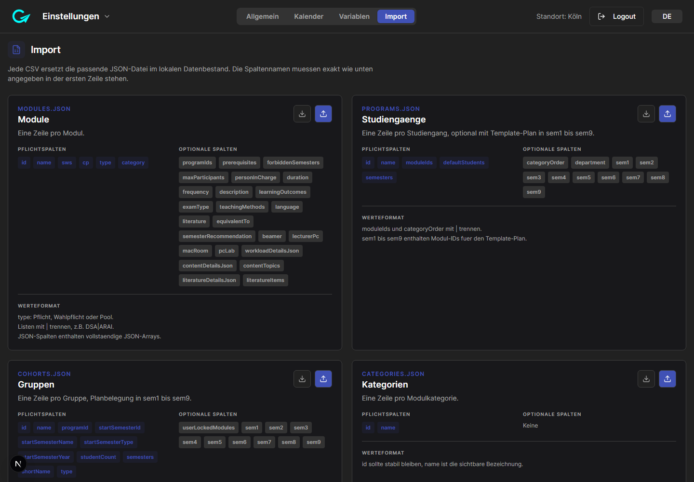
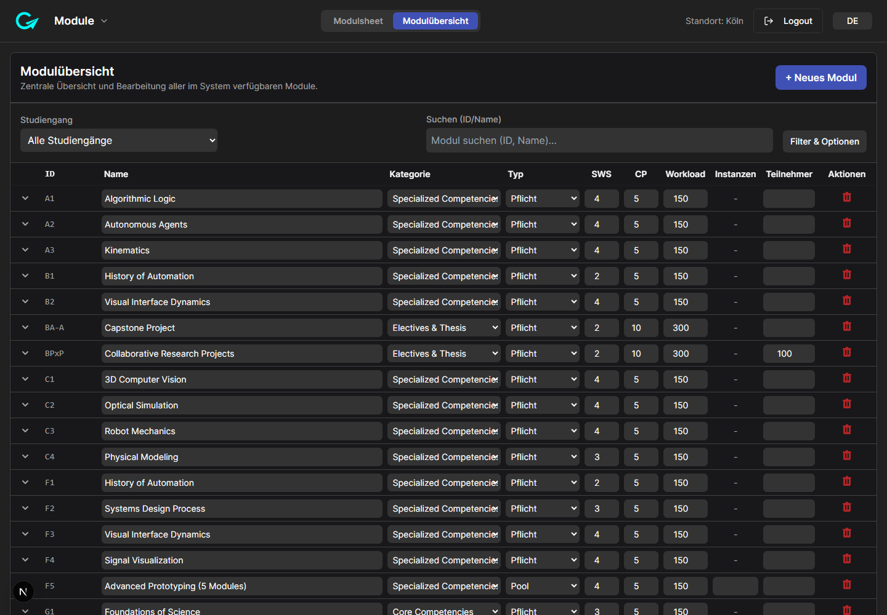
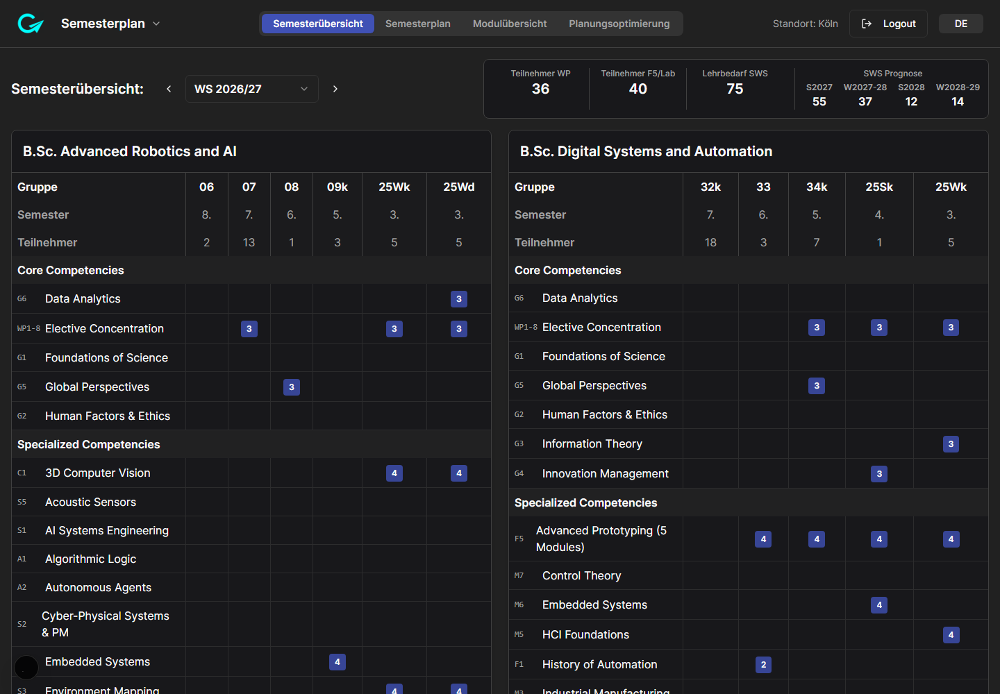
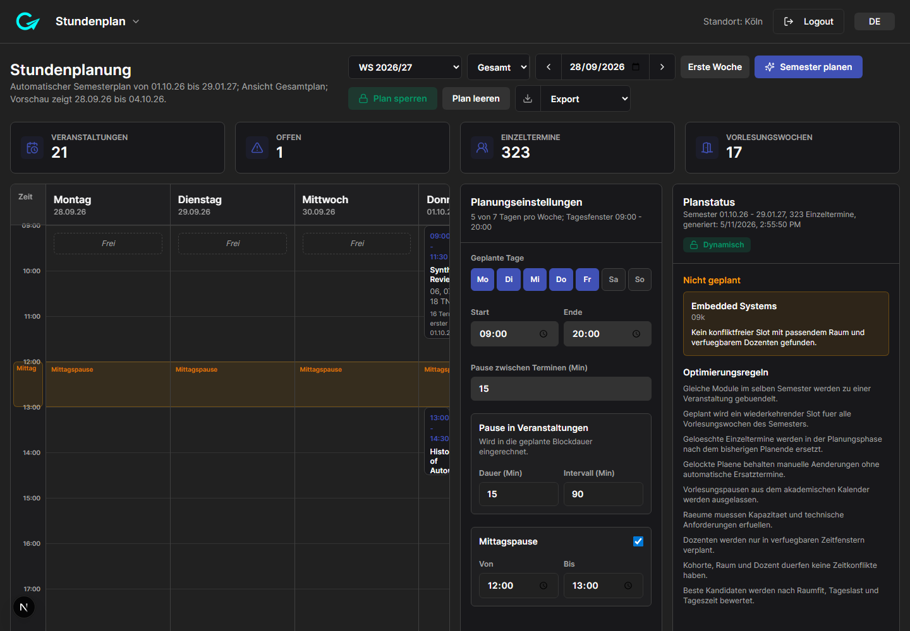